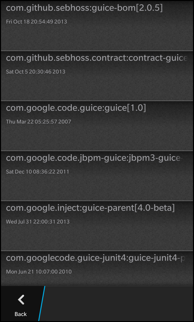

Maven Artifact search Example
Files:
- mavenartifacts/assets/CustomTimelineView.qml
- mavenartifacts/assets/StandardTimelineView.qml
- mavenartifacts/assets/main.qml
- mavenartifacts/src/ArtifactRequest.cpp
- mavenartifacts/src/ArtifactRequest.hpp
- mavenartifacts/src/app.cpp
- mavenartifacts/src/app.hpp
- mavenartifacts/src/main.cpp
- mavenartifacts/mavenartifacts.pro
Description
The Maven Artifacts example demonstrates how to access a RESTful service that responds with JSON data and then display the results on the screen.

Overview
In this example we'll learn how to use the QNetworkAccessManager and JsonDataAccess classes to download artifacts from the RESTful webservice and parse them into a model to visualize them in a ListView.
The business logic of this application is encapsulated in the App class, which is exported to QML under the name '_artifactline'.
UI
The UI of this sample consists of a TextField to enter the artifact name and a Button to start the lookup for artifacts containing the given name. Whenever the user clicks the button, the requestArtifact() method of the App object is invoked. The button is disabled while the lookup is in progress.
TextField { id: screenName text: "Guice" } Button { horizontalAlignment: HorizontalAlignment.Center enabled: !_artifactline.active text: qsTr("Artifacts") onClicked: { _artifactline.requestArtifact(screenName.text); } }
If an error occurs during the lookup, the 'error' property of the App object becomes 'true', which makes the Label below the button visible. It will show the error message as provided by the App object.
Label { verticalAlignment: VerticalAlignment.Center visible: _artifactline.error multiline: true text: _artifactline.errorMessage textStyle { base: SystemDefaults.TextStyles.BigText; color: Color.Gray } }
If the lookup is successful, the App object emits the ArtifactsLoaded() signal. After the UI is initialized, we connect the pushPane() function against this signal.
function pushPane() { navigationPane.push(viewTypes.selectedValue.createObject()) } onCreationCompleted: _artifactline.artifactsLoaded.connect(pushPane)
The pushPane() function will push a page, that shows the artifacts in a ListView, on the navigation pane. Since we want to have two different visual representations of the list, we have two different pages. One uses the standard list item component and the other uses a custom list item component.
attachedObjects: [ ComponentDefinition { id: standardViewPage source: "StandardTimelineView.qml" }, ComponentDefinition { id: customViewPage source: "CustomTimelineView.qml" } ]
Both pages are loaded through ComponentDefinitions and the user can select which one is used through a SegmentedControl at the bottom of the screen.
SegmentedControl { id: viewTypes Option { id: basicView text: qsTr("Standard") value: standardViewPage selected: true } Option { id: richView text: qsTr("Custom") value: customViewPage } }
The standard appearance is implemented in StandardTimelineView.qml and uses the StandardListItem as ListItemComponent. As data model the ListView uses the model provided by the App object.
ListView { dataModel: _artifactline.model listItemComponents: [ ListItemComponent { type: "item" StandardListItem { status: ListItemData.id description: ListItemData.latestVersion imageSpaceReserved: false } } ] }
The page looks like the following:

The custom appearance is implemented in CustomTimelineView.qml and uses a custom control as ListItemComponent, consisting of two Labels below each other.
ListView { dataModel: _artifactline.model function date(timestamp) { return _artifactline.dateFromTimestamp(timestamp) } listItemComponents: [ ListItemComponent { type: "item" Container { id: itemRoot preferredWidth: 768 preferredHeight: 200 layout: DockLayout {} ImageView { horizontalAlignment: HorizontalAlignment.Fill verticalAlignment: VerticalAlignment.Fill imageSource: itemRoot.ListItem.selected ? "asset:///images/item_background_selected.png" : "asset:///images/item_background.png" } Container { horizontalAlignment: HorizontalAlignment.Left leftPadding: 20 rightPadding: 20 Label { horizontalAlignment: HorizontalAlignment.Center verticalAlignment: VerticalAlignment.Center text: ListItemData.id + "[" + ListItemData.latestVersion + "]" textStyle { base: SystemDefaults.TextStyles.BodyText color: Color.Gray } } Label { preferredHeight: 200 text: itemRoot.ListItem.view.date(ListItemData.timestamp) textStyle { base: SystemDefaults.TextStyles.SmallText color: Color.Gray } multiline: true } } } } ] onTriggered: { clearSelection() select(indexPath) } }
The page looks like the following:

The App class
The App class encapsulates the business logic of this application. It provides methods to trigger the lookup of artifacts, a property of type bb::cascades::DataModel that contains the found artifacts and further properties to report the current state of the object (e.g. error or in-progress).
class App : public QObject { Q_OBJECT Q_PROPERTY(bool active READ active NOTIFY activeChanged) Q_PROPERTY(bool error READ error NOTIFY statusChanged) Q_PROPERTY(QString errorMessage READ errorMessage NOTIFY statusChanged) Q_PROPERTY(bb::cascades::DataModel* model READ model CONSTANT) public: App(QObject *parent = 0); public Q_SLOTS: /* * Called by the QML to get a artifact feed for the artifact search name */ void requestArtifact(const QString &artifactName); /* * Allows the QML to reset the state of the application */ void reset(); /** * Called to get date string from a timestamp. */ Q_INVOKABLE QString dateFromTimestamp(const QString ×tamp); Q_SIGNALS: /* * This signal is emitted whenever the artifacts have been loaded successfully */ void artifactsLoaded(); /* * The change notification signals of the properties */ void activeChanged(); void statusChanged(); private Q_SLOTS: /* * Handles the complete signal from ArtifactRequest when * the request is complete * @see ArtifactRequest::complete() */ void onArtifactsline(const QString &info, bool success); private: /* * Parses the JSON response from the artifact request */ void parseResponse(const QString&); /* * The accessor methods of the properties */ bool active() const; bool error() const; QString errorMessage() const; bb::cascades::DataModel* model() const; private: bool m_active; bool m_error; QString m_errorMessage; bb::cascades::GroupDataModel* m_model; };
Inside the constructor the model is initialized and the UI is loaded from main.qml file.
App::App(QObject *parent) : QObject(parent) , m_active(false) , m_error(false) , m_model(new GroupDataModel(QStringList() << "id", this)) { m_model->setGrouping(ItemGrouping::None); QmlDocument* qml = QmlDocument::create("asset:///main.qml").parent(this); qml->setContextProperty("_artifactline", this); AbstractPane* root = qml->createRootObject<AbstractPane>(); Application::instance()->setScene(root); }
Before a new request is issued, the reset() method is called, which clears any previous error information.
void App::reset() { m_error = false; m_errorMessage.clear(); emit statusChanged(); }
When the user clicks the 'Timeline' button, the requestArtifact() method is invoked with the artifact name as parameter. If no lookup is currently running, we do a sanity check on the artifact name and if everything is ok execute the lookup. The lookup on the network is encapsulated in a ArtifactRequest object, which provides a signal complete() to notify us when the raw JSON data has been retrieved. We connect a custom slot against this signal and start the request. Afterwards we change the 'active' property of the App object to signal the UI that a lookup is in progress.
void App::requestArtifact(const QString &artifactName) { if (m_active) return; // sanitize artifactname const QStringList list = artifactName.split(QRegExp("\\s+"), QString::SkipEmptyParts); if (list.isEmpty()) { m_errorMessage = "please enter a valid artifact name"; m_error = true; emit statusChanged(); return; } const QString artifactId = list.first(); ArtifactRequest* request = new ArtifactRequest(this); bool ok = connect(request, SIGNAL(complete(QString, bool)), this, SLOT(onArtifactsline(QString, bool))); Q_ASSERT(ok); Q_UNUSED(ok); request->requestArtifactline(artifactId); m_active = true; emit activeChanged(); }
When the network lookup is finished, the onArtifactsline() slot is invoked. There we first check whether an error occurred. In case of an error we update the 'error' and 'errorMessage' property of the App object and inform the UI about the change. Otherwise we call the helper method parseResponse().
void App::onArtifactsline(const QString &info, bool success) { ArtifactRequest *request = qobject_cast<ArtifactRequest*>(sender()); if (success) { parseResponse(info); emit artifactsLoaded(); } else { m_errorMessage = info; m_error = true; emit statusChanged(); } m_active = false; emit activeChanged(); request->deleteLater(); }
The parseResponse() method uses the JsonDataAccess class to parse the raw JSON data into a list of QVariantMaps, which can be inserted directly into our model.
void App::parseResponse(const QString &response) { m_model->clear(); if (response.trimmed().isEmpty()) return; // Parse the json response with JsonDataAccess JsonDataAccess dataAccess; const QVariantMap variant = dataAccess.loadFromBuffer(response).toMap(); // The qvariant is a map of searches which is extracted as a list const QVariantList feed = variant["response"].toMap()["docs"].toList(); // For each object in the array, push the variantmap in its raw form // into the ListView foreach (const QVariant &artifact, feed) { m_model->insert(artifact.toMap()); } }
The ArtifactRequest class
The ArtifactRequest class encapsulates the retrieval of data from the maven central webservice. It basically provides a method to trigger the lookup and a signal to notify when the lookup is finished.
class ArtifactRequest : public QObject { Q_OBJECT public: ArtifactRequest(QObject *parent = 0); /* * Makes a network call to retrieve the maven central feed for the specified artifact name * @param artifactName - the artifact name of the feed to extract * @see onArtifactlineReply */ void requestArtifactline(const QString &artifactName); Q_SIGNALS: /* * This signal is emitted when the search request is received * @param info - on success, this is the json reply from the request * on failure, it is an error string * @param success - true if search request succeed, false if not */ void complete(const QString &info, bool success); private Q_SLOTS: /* * Callback handler for QNetworkReply finished() signal */ void onArtifactlineReply(); };
In requestArtifactline() we create a new QNetworkAccessManager object, which will do the low-level HTTP network communication. It expects an URL as input parameter, which we assemble here from the REST API and the artifact name. Calling QNetworkAccessManager's get() method returns a QNetworkReply object, which acts as a handle to follow the status and progress of the network operation. We connect against its finished() signal to know when all data have been received.
void ArtifactRequest::requestArtifactline(const QString &artifactName) { QNetworkAccessManager* networkAccessManager = new QNetworkAccessManager(this); const QString queryUri = QString::fromLatin1("http://search.maven.org/solrsearch/select?q=%1&rows=20&wt=json").arg(artifactName); QNetworkRequest request(queryUri); QNetworkReply* reply = networkAccessManager->get(request); bool ok = connect(reply, SIGNAL(finished()), this, SLOT(onArtifactlineReply())); Q_ASSERT(ok); Q_UNUSED(ok); }
Inside the connected slot we check whether an error occurred and read the data from the QNetworkReply if the download was successful. At the end we emit the complete() signal with the JSON data or an error message as parameter.
void ArtifactRequest::onArtifactlineReply() { QNetworkReply* reply = qobject_cast<QNetworkReply*>(sender()); QString response; bool success = false; if (reply) { if (reply->error() == QNetworkReply::NoError) { const int available = reply->bytesAvailable(); if (available > 0) { const QByteArray buffer = reply->readAll(); response = QString::fromUtf8(buffer); success = true; } } else { response = tr("Error: %1 status: %2").arg(reply->errorString(), reply->attribute(QNetworkRequest::HttpStatusCodeAttribute).toString()); } reply->deleteLater(); } if (response.trimmed().isEmpty()) { response = tr("Artifact request failed. Check internet connection"); } emit complete(response, success); }